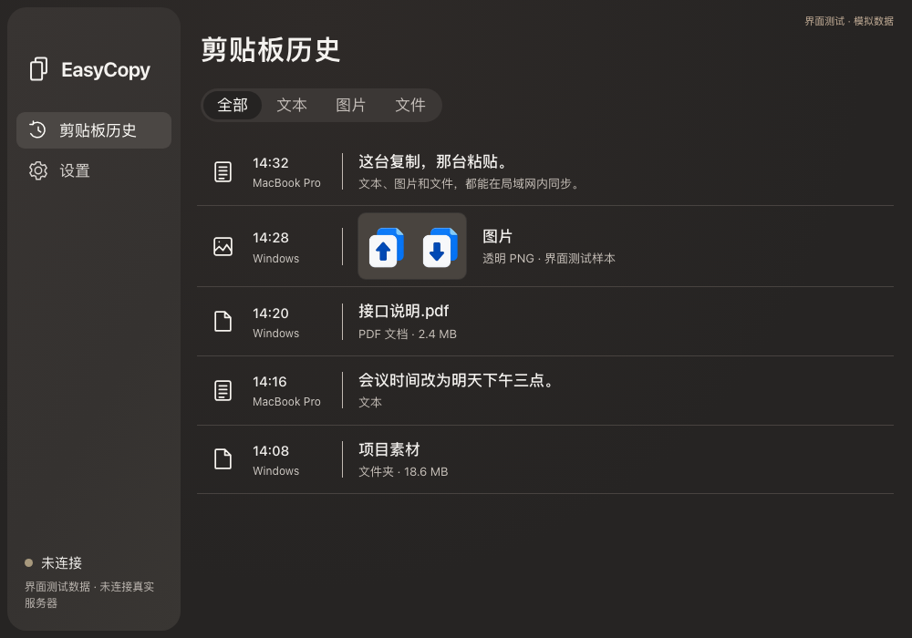

文字和图片，随手同步
复制一段文字或图片内容，在另一台电脑上粘贴。两个方向都可以。

少一次文件中转，多一点专注。
复制一段文字或图片内容，在另一台电脑上粘贴。两个方向都可以。
在 Finder 或资源管理器中复制，接收后还原成文件和目录，保留原来的文件结构。
自动保留最近 10 条历史。文本和图片可再次复制，文件与文件夹可另存为。
上传、下载都有提示。大文件上传前先确认，确认阈值可以在设置中调整。
选择对应的系统和芯片。下载按钮始终指向 GitHub 最新正式桌面版。
Developer ID 签名与 Apple 公证已完成。
打开 DMG，将 EasyCopy 拖入“应用程序”。
不确定芯片？打开苹果菜单 → 关于本机。
下载 EXE 安装包，按提示安装。
缺少 WebView2 时需要联网安装运行环境。
当前未签名，系统可能显示 SmartScreen 提示。
还需要自建中转服务，并让两端连接同一个服务。项目不提供公共服务器。可先阅读部署说明，再决定是否适合你的使用环境。
关键是两台电脑都能访问你配置的中转服务器。局域网内可以使用内网地址；跨网络使用需要自行配置可达的服务器地址和端口。
离线复制只保留本地历史。重连时补充历史，不会自动覆盖当前剪贴板；已登记但中断的传输任务会按规则重试。
支持文本、图片内容、普通文件和文件夹。不同应用对剪贴板格式的支持有差异，不保证所有应用都接受文件夹或专有格式；符号链接和特殊文件不在支持范围内。目前不提供 Linux 桌面客户端和 Windows ARM64 安装包。